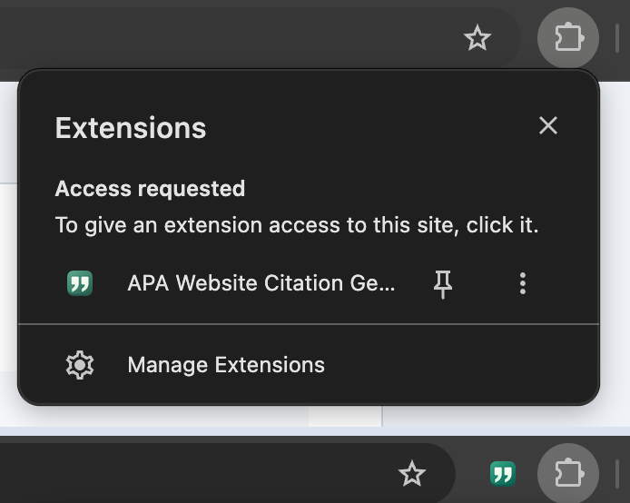
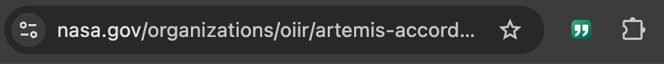

APA Website Citation Generator
Some of this guide is shown in English.
Welcome to APA Website Citation Generator
Turn a web article into an APA 7 reference.
Already pinned? See how to use it.-
Pin the extension
Click Extensions in the Chrome toolbar, then click the pin beside APA Website Citation Generator.

-
Open the extension
Open the article you want to cite, then click APA Website Citation Generator on your Chrome toolbar.

These screenshots illustrate the English interface. Follow the written steps in your language.
Chrome screenshots
Create your first APA 7 reference
Show how to pin itThese screenshots illustrate the English interface. Follow the written steps in your language.
-
Open the extension from the article
With the article open in Chrome, click APA Website Citation Generator on the toolbar or in Chrome’s Extensions menu.

-
Read the article details
In the workspace that opens, click Read page details. Compare the suggested author, date, title, website name, and URL with the article.

-
Check the fields and create the reference
Correct any fields that need editing. If the author appears as a single suggestion, fill in Family name and Given names. Select I checked the source details. Then click Create reference.

-
Copy the APA 7 reference
Click Copy reference to copy the reference to your clipboard.

After pasting the reference, apply italics where needed and add a hanging indent.